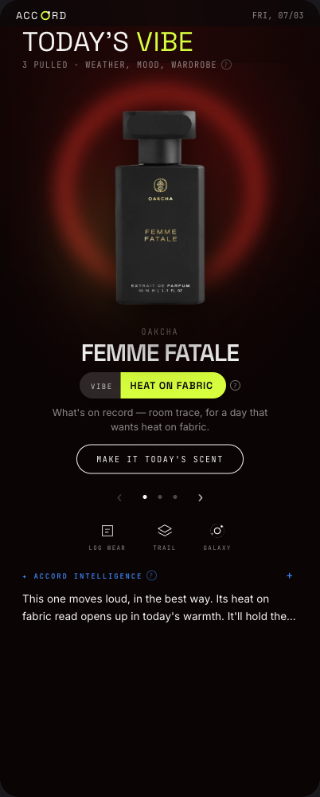
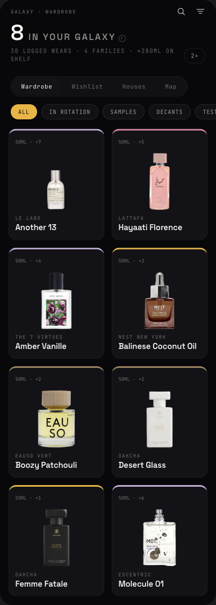
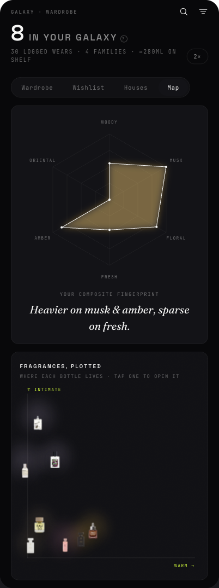

ACCORD
A fragrance-intelligence and scent-wardrobe app. The wardrobe you own, the intelligence that learns how you actually wear it, and a daily pull chosen from real weather and wear history.
The 10-second version
Your fragrance collection becomes a Galaxy — every bottle photographed, note-mapped, and wear-counted. Each morning Accord pulls Today's Vibe: three scents from your own shelf, chosen against live weather, season, and how you've been wearing things. You commit to one, log the wear, and the intelligence gets sharper. Think Whering's wardrobe discipline with GOAT's collector energy — for perfume.
The spark
A collection tells you what you own; it doesn't help you choose. Scent is deeply personal and completely untracked — nobody knows their own cost-per-wear, which bottles are gathering dust, or what actually suits a humid Thursday. I wanted my nose organized.
Decision fatigue, ended
“What should I wear today?” answered in one glance — with the why spelled out (weather, season, how long since its last orbit), not a generic quiz result.
Intelligence, not inventory
Plenty of apps list perfume. Accord learns: it reads your wear patterns, spots gaps in the wardrobe, surfaces what's under-loved, computes cost-per-wear as a sustainability signal, and turns your wishlist into an actionable pipeline (“Snagged it” moves a wish straight onto the shelf).
The screens



Captured from the live build with a demo wardrobe. The visual language — “acid wardrobe” — is neon acids on near-black, floating background-removed bottles, and poster type. The build log covers the influences.
Under the hood
A React + Vite web app on Supabase (auth, Postgres with row-level security, storage). The fragrance atlas is internal-first: fuzzy search (typo-tolerant trigram matching) over our own database, with the Fragella API filling gaps one fragrance at a time as users add bottles — fetched once, owned forever, images mirrored into our own storage. Live weather comes from Open-Meteo with an honesty gate: the app only claims current conditions when it actually has them, otherwise it says it's reading the season. Every aura graphic and backdrop is generated CSS/SVG — nothing licensed, nothing scraped.
The business model
- Premium intelligence — deeper personalization, forecasting, and wardrobe-gap analysis as the subscription layer.
- Shoppable wishlist — wishlist bottles link to retail pages today; affiliate is the natural next step.
- Community pages — free templates for your scent page, paid tier for custom ones.
- The Exchange — longer term: local meetup gifting of bottles (no shipping, no payments — community and compliance friendly).
Roadmap: comeback mechanics (streaks, weekly recap) → community feed → native app with barcode scanning → the stores.
What I learned building it
Cache on touch, own the assets
Instead of bulk-importing a fragrance database (expensive, and usually against someone's terms), each fragrance is fetched from the licensed API once — the first time a real user adds it — then it lives in our atlas forever, image included. Pay per fragrance once, not per call forever.
Fix the cause, not the symptom
Tooltips kept clipping off-screen. The lazy fix is nudging pixels; the real cause was the swipeable rail's scroll container clipping everything inside it. The component now renders through a portal at the page root — it can't be clipped by anything, anywhere in the app.
Give every color a job
One neon accent doing every job reads as noise. Accord's rule: acid yellow = action & identity, acid blue = intelligence, acid magenta = desire (wishlist) — and the six scent-family hues stay reserved for data. Feedback like “I keep thinking Vibe is a Note” gets solved by the system, not a one-off tweak.
Feedback in batches, fixes in systems
Built in Claude Code on Claude Fable 5. Eight pieces of screen feedback went in as one message and came back as one coherent redesign across five files — verified in a live browser before I looked at it. The unlock is treating the AI like a senior pair: give it the why behind the feedback and let it propose the system.
This is the work I do on consult.
Taking a fuzzy idea (“my nose, organized”) to a designed, data-backed product — and scoping each milestone to the part that actually ships. Got an idea sitting in your head? Let's get it out.
Work with me →